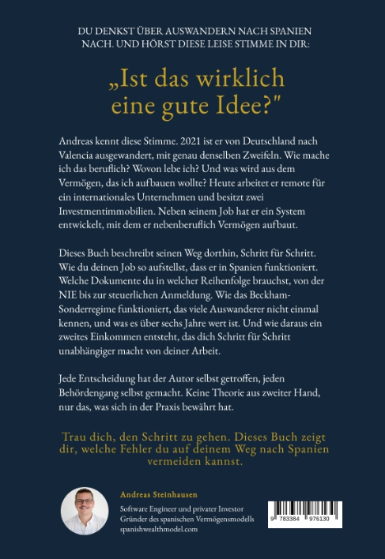

Wie du nach Spanien auswanderst, dort arbeitest, Steuern optimierst und nebenberuflich ein Immobilienvermögen aufbaust. Aus erster Hand von jemandem, der genau diesen Weg gegangen ist.

Du denkst über Auswandern nach Spanien nach. Und hörst diese leise Stimme. Wie mache ich das beruflich? Wovon lebe ich? Und was wird aus dem Vermögen, das ich aufbauen wollte?
Andreas Steinhausen kennt diese Stimme. 2021 ist er von Deutschland nach Valencia ausgewandert, mit genau denselben Zweifeln. Heute arbeitet er remote für ein internationales Unternehmen und besitzt mehrere Investmentimmobilien.
Dieses Buch beschreibt seinen Weg dorthin. Schritt für Schritt, in sechs Phasen, ohne Theorie aus zweiter Hand.
Prüfen, ob du die Voraussetzungen erfüllst, bevor du nach Spanien auswanderst.
NIE, Residencia, Empadronamiento und Steuerstatus — Schritt für Schritt in der richtigen Reihenfolge erklärt.
Aus Gehalt wird Eigenkapital, unter Beckham-Law noch schneller.
Anleitung: Objekte finden, bewerten, finanzieren, vermieten.
Von Brutto- auf Nettooptimierung umstellen. Steueroptimierung.
Den Skalierungszyklus wiederholen, bis du finanzielle Unabhängigkeit erreichst.
Jede Phase ist die Voraussetzung für die nächste: das Fundament für das Setup, das Setup für den Kapitalaufbau, das Kapital für die erste Immobilie, die Immobilie für den steuerlichen Wechsel — und alles zusammen für die Skalierung.
Wer als Angestellter neu nach Spanien zieht, kann unter bestimmten Voraussetzungen für maximal sechs Jahre in ein steuerliches Sonderregime optieren, das Beckham-Law. Statt der progressiven Einkommensteuer gilt dann ein pauschaler Satz, und ausländische Einkünfte bleiben in Spanien unberücksichtigt.
Denn der Antrag ist an enge Bedingungen und kurze Fristen gebunden, die man kennen muss, bevor man ankommt.
Das Buch erklärt, wer qualifiziert, wie der Antrag läuft, was das Regime konkret wert ist und was danach kommt. Beckham ist kein Steuertrick, sondern ein zeitlich begrenzter Beschleuniger im Gesamtmodell.
Der Rechner bildet das Cashflow-Modell aus Phase 3 direkt ab. Kaufpreis, Finanzierung, Mieteinnahme und Rücklagen eingeben — und sofort sehen, ob ein Objekt das Zeug zum Investment hat.
Kostenlos verfügbar auf spanishwealthmodel.com — keine Registrierung erforderlich.
Schreib mir eine kurze E-Mail und ich melde mich einmalig, sobald das Buch bestellbar ist. Keine Newsletter-Serie, keine Weitergabe deiner Adresse.
Das Buch erscheint bei tredition als Softcover und Hardcover, eine E-Book-Ausgabe folgt. Bestellbar wird es im tredition-Shop — dort bestellst du direkt beim Verlag —, bei Amazon und über jede Buchhandlung.
ISBN Softcover: 978-3-384-97613-0
ISBN Hardcover: 978-3-384-97614-7
Das Buch erscheint in Kürze im Verlag tredition — als Softcover und als Hardcover, eine E-Book-Ausgabe folgt etwas später. Am besten bestellst du direkt im tredition-Shop, dort geht die Bestellung unmittelbar an den Verlag. Alternativ gibt es das Buch bei Amazon oder auf Bestellung in jeder deutschen Buchhandlung — dort genügt die ISBN. Lass dich benachrichtigen, sobald es so weit ist.
Für beide. Phase 0 ist explizit für Menschen geschrieben, die den Umzug noch planen: Job, Einkommen, Remote-Setup, steuerliche Ausgangslage und Bankfähigkeit. Phase 1 zeigt dann, was du vor Ort erledigst — von NIE und Residencia bis Steuerstatus, Sozialversicherung und Bankkonto.
Nein. Beckham-Law ist eine Komponente des Systems — ein optionaler Beschleuniger für den Eigenkapitalaufbau. Die Logik dahinter bleibt auch ohne Beckham stark: sauberes Setup, hohe Sparquote, konservative Immobilienauswahl, Cashflow-Disziplin und später Steueroptimierung im Régimen General.
Nein. Die Phasen 0 bis 2 — Vorbereitung, Setup in Spanien und beschleunigter Kapitalaufbau — funktionieren unabhängig davon, ob du später investierst. Wer auswandert, in Spanien arbeitet und seine Steuersituation verstehen will, findet darin den vollständigen Ablauf. Die Immobilienphasen 3 bis 5 bauen darauf auf, sind aber ein eigener Schritt, den du gehen kannst, aber nicht musst.